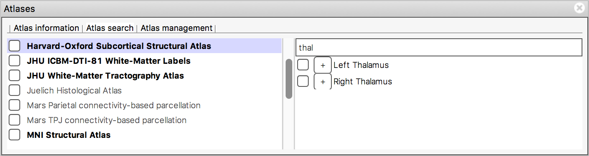
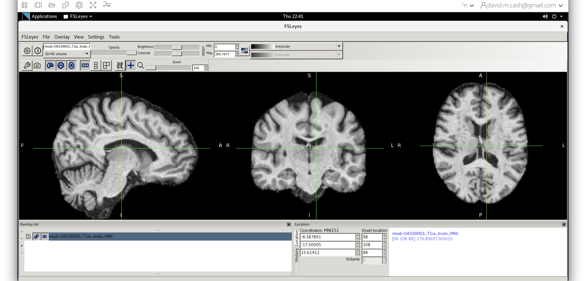
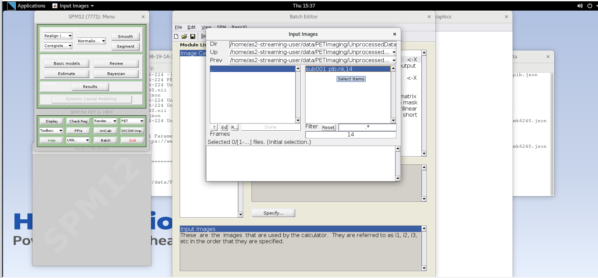
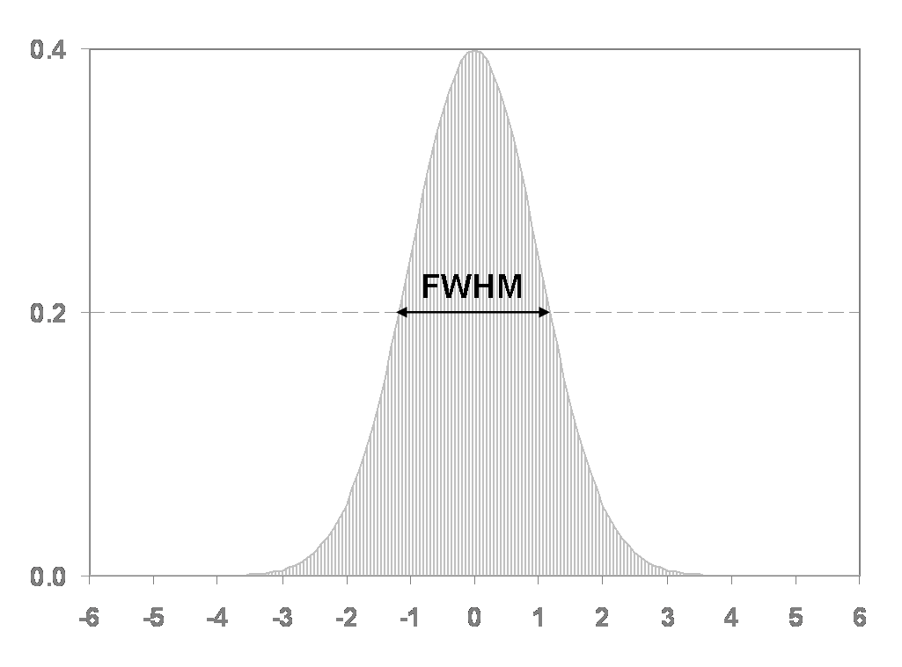

Imaging Data: Structure And Formats
Figure 1
Clicking on the Applications in the upper left-hand corner and select
the terminal icon. This will open a terminal window that you will use to
type commands 
Figure 2
qform): this
field encodes a transformation or mapping that tells us how to
convert the voxel location (i,j,k) to the real-world coordinates
(x,y,z) (i.e. the coordinate system of the MRI scanner in which
the image was acquired). The real-world coordinate system tends to be
defined according to the patient. The x-axis tends to go from patient
left to patient right, the y axis tends to go from anterior to
posterior, and the z-axis goes from top to bottom of the patient. This
mapping is very important, as this information will be needed to
correctly visualize images and also to align them later.  An alternative
command to
An alternative
command to fslinfo is fslhd, which displays a
reduced set of properties about the images (mainly data type, dimension
and resolution).Figure 3
 The display toolbar allows you to adjust the display
properties of the currently selected image. Play around with the
controls and note how the image display changes (but leave the “overlay
type” as “3D/4D volume”).
The display toolbar allows you to adjust the display
properties of the currently selected image. Play around with the
controls and note how the image display changes (but leave the “overlay
type” as “3D/4D volume”).
Figure 4
Figure 5
Figure 6
If FSLeyes does not have enough room to display a toolbar in full, it
will display left and right arrows (  ), ( ) on each side of the toolbar - you can click
on these arrows to navigate back and forth through the toolbar.
), ( ) on each side of the toolbar - you can click
on these arrows to navigate back and forth through the toolbar.
Figure 7

Figure 8
Figure 9
Figure 10
Figure 11
Figure 12
Figure 13
Figure 14
Figure 15
Open a lightbox view using View > Lightbox View.
If you drag the mouse around in the viewer you can see that the cursor
position is linked in the two views of the data (the ortho and the
lightbox views). This is particularly useful when you have several
images loaded in at the same time (you can view each in a separate view
window and move around all of them simultaneously). 
Figure 16
Figure 17
Figure 18
Figure 19
Figure 20
You can “unlink” the cursor position between the two views (it is
linked by default). Go into one of the views, e.g., the lightbox view,
and press the spanner button (  ). This will open the lightbox view
settings panel. Turn off the Link Location option, and
close the view settings panel. You will now find that this view (the
lightbox view) is no longer linked to the “global” cursor position, and
you can move the cursor independently (in this view) from where it is in
the other views.
). This will open the lightbox view
settings panel. Turn off the Link Location option, and
close the view settings panel. You will now find that this view (the
lightbox view) is no longer linked to the “global” cursor position, and
you can move the cursor independently (in this view) from where it is in
the other views.
Figure 21
Now load in a second image
(sub-OAS30015_T1w_brain_pve_0.nii.gz) using File >
Add from file. This image is a tissue segmentation image of the
cerebrospinal fluid. In the bottom-left panel is a list of loaded images
- the overlay list. 
Figure 22
Figure 23
Figure 24
Figure 25
In the bottom right corner of the FSLeyes window you will find the
location panel, which contains information about the current cursor
location, and image data values at that location. 
Figure 26
The Atlas information tab displays information about
the current display location, relative to one or more atlases:  The list on the left allows you to select the atlases
that you wish to query - click the check boxes to the left of an atlas
to toggle information on and off for that atlas. The
Harvard-Oxford cortical and
sub-cortical structural atlases are both selected by
default. These are formed by averaging careful hand segmentations of
structural images of many separate individuals.
The list on the left allows you to select the atlases
that you wish to query - click the check boxes to the left of an atlas
to toggle information on and off for that atlas. The
Harvard-Oxford cortical and
sub-cortical structural atlases are both selected by
default. These are formed by averaging careful hand segmentations of
structural images of many separate individuals.
Figure 27
The Atlas search tab allows you to browse through
the atlases, and search for specific regions. 
Figure 28
The search field at the top of the region list allows you to filter the regions that are displayed. 
Figure 29
Here are the screenshots you should see: 
Figure 30

Figure 31
Change the intensity range for both images to be between 0 and 1000.
Show/hide images with the eye button (  ), or by double clicking on the image name
in the overlay list.
), or by double clicking on the image name
in the overlay list.
Structural MRI: Bias Correction, Segmentation and Image Registration
Figure 1
Clicking on the Applications in the upper left-hand corner and select
the terminal icon. This will open a terminal window that you will use to
type commands
Figure 2
From the terminal window, type fsleyes to open up the
image and have a look around. 
Figure 3
Now we choose the file sub-OAS_30003_T1w.nii by going to
the File menu and choosing the Add Image command 

Figure 4
spm pet to launch SPM (screenshot) 
Figure 5

Figure 6
Figure 7
Figure 8
data and then StructuralMRI. Then select the
first image sub-OAS30003_T1w.nii. Once you click on it, you
will notice the file move down to the bottom of the box which represents
the list of selected files. 
Figure 9
NIH 
Figure 10

Figure 11
msub-OAS30003_T1w.nii. Change the lookup table to NIH as
you did in Step 2. Change the minimum to 40 and maximum intensity to 500
similar to what you did in Step 2 and 3. 
Figure 12
Now that we are happy with the bias correction, lets look at the
tissue segmentation. 1. Use the icon to turn off the original image.
Select the bias corrected image and make sure the colormap is back to
the first option “Greyscale”  1. Now add the grey matter
probability image
1. Now add the grey matter
probability image c1sub-OAS30003_T1w.nii. 1. Choose the
probability map and set the lookup table to Red. Change the minimum
intensity to 0.2 and the maximum intensity to 0.9. This will eliminate
some noise from very low probability voxels. 1. Use the opacity slider
to make the grey matter probability map transparent.  1. Look around the image, zoom in places, and try turning the grey
matter probability map off and on. The goal is to make sure the grey
matter probability map is not: 1. Missing any grey matter 1. Not
including other tissue (WM, CSF, non-brain tissue that has a similar
intensity to GM)
1. Look around the image, zoom in places, and try turning the grey
matter probability map off and on. The goal is to make sure the grey
matter probability map is not: 1. Missing any grey matter 1. Not
including other tissue (WM, CSF, non-brain tissue that has a similar
intensity to GM)
Figure 13
This command masks our bias corrected image with the brain mask and
makes a new file which has the name
msub-OAS30003_T1w_brain.nii. Take a look at the image in
fsleyes. 
Figure 14
We will then use the FSL registration program FLIRT to align
our image to the standard space MNI152. Please follow the steps below:
1. On the terminal window, please type in the following command
Flirt 1. This will open a dialog box. We will change the
following settings: 1. For reference image, click on the folder icon and
choose the image MNI152_T1_1mm_brain 1. For the input
image, please select the mask we created above
msub-OAS30003_T1w_brain.nii 1. For the output image, please
type in a new name msub-OAS30003_T1w_brain_MNI.nii The
final command setup should look like the screenshot below. 
Figure 15
Let’s open fsleyes and open the output from the
co-registration msub-OAS30003_T1w_brain_MNI.nii. 
Figure 16
Now click on the Add Standard function. This is where fsleyes keeps
all of the standard atlases and templates so that you can quickly access
them. 
Figure 17
Select the MNI152_T1_1mm_brain from this list of files.

Figure 18
The final command setup should look like the screenshot below: 
Processing and analysing PET brain images
Figure 1
Select the ImCalc module. 
Figure 2
Enter the frame number corresponding to the frame that spans
50-55 min post-injection (frame number 14) and hit enter. Click on the
sub001_pib.nii,14 file to add this to the list. 
Figure 3
Enter the next framenumber and similarly add it to the list.
Repeat until you’ve added the last four frames of the PiB image
corresponding to 50-70 min post-injection (frames 14, 15, 16, and 17).
Note the order you input the images corresponds to i1, i2, … in the
Expression field later. Once you’ve selected the last four frames click
Done to finalize the selection. 
Figure 4
Output Filename – enter text
sub001_pib_SUM50-70min.nii 
Figure 5
Note that taking the average of these frames is equivalent to summing
all of the detected counts across the frames  . and
dividing by the total amount of time that has passed during those frames
(i.e., 20 min).
. and
dividing by the total amount of time that has passed during those frames
(i.e., 20 min).
Figure 6
Data Type – specify FLOAT32 
Diffusion-weighted imaging (DWI)
Figure 1
Eddy also takes a lot of input arguments, as depicted below
Image adapted from https://open.win.ox.ac.uk/pages/fslcourse/practicals/fdt1/index.html
Figure 2
Example of the V1 file in RGB:
Functional Magnetic Resonance Imaging (fMRI)
Figure 1
As mentioned in the imaging data
section, the & at the end of the command allows us to
keep working on the command line while having a graphical application
(such as fsleyes) opened. Helpful options for reviewing
fMRI data in fsleyes are the movie option (  ) and the timeseries
option (-> view -> timeseries or keyboard shortcut ⌘-3). Check
them out!
) and the timeseries
option (-> view -> timeseries or keyboard shortcut ⌘-3). Check
them out!
Figure 2
The standard procedure for spatial smoothing is applying a gaussian function of a specific width, called the gaussian kernel. The size of the gaussian kernel determines how much the data is smoothed and is expressed as the Full Width at Half Maximum (FWHM). 
Figure 3